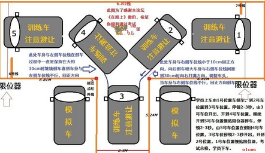
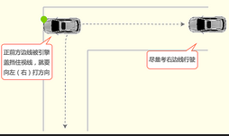
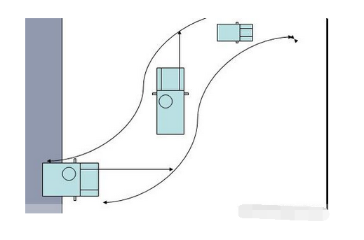
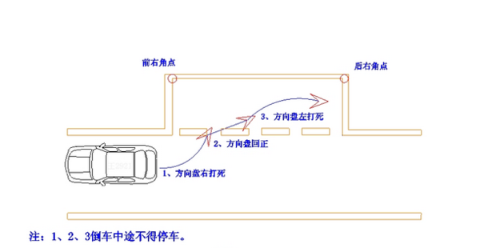

大车学车指南
一、大货车挂档技巧：（也适合其他手动挡汽车）
1、变速换挡要牢记“加挡先加速，减挡先减速”的原则，在加挡前“轰”油门把车速先提起来，在减挡前“收”油门把车速先降下来。
在换挡时，尽量采用“两脚离合法”，加挡时按照“踩(离合器)、摘(空挡)、踩(离合器)、挂(高速挡)”的原则，快速踩两脚离合器踏板，可以很轻松地增加挡位。
减挡时，按照“踩(离合器)、摘(空挡)、抬(离合器)、轰(油门)、踩(离合器)、挂(低速挡)”的原则，踩两脚离合器，并在第一脚离合器后轰一脚空油，并保持一会儿，然后再踩下第二脚离合器踏板，与此同时将变速杆变换到低速档。
2、换档要及时、正确、平稳和迅速。汽车起步时，一般用低速档(一档)起步。起步后，只要道路条件许可，应迅速及时逐级换入高速档。一般地说，高速档比低速档要省油。所以起步后，应及时升档，不要拖档行驶。
不得在坡路或车速降低时，使用高速档勉强行驶;也不准许使用较低速档，在路况好的条件下长时间行驶。
一般情况下不允许在车速较高时强行换入低速档，只能在一些极特殊的情况下，比如，冰雪路不宜使用制动器，或者行车中制动器突然失效时，而必须借助汽车发动机制动时才用。
在汽车行驶中变速，非特殊情况，不得越级换档。
上坡换档，技术要熟练，动作配合应协调，以免发生车辆停顿或变速时齿轮碰撞，甚至换不进档位。换档时动作稍慢一点就会使车速降低，甚至停车。特殊情况时可越级换档(如五档换到三档，四档换到二档等)。
下坡换档，由低速档换入高速档与在平路上换档操作相同，但动作要快，空档只要一带而过，不可停留。否则，由于下坡助力的作用，使变速器的主、从动齿轮的转速差急剧增大，难以换入档位。
一旦出现挂错档或挂不进档时，应选择正确档位快速补加空油后重新挂入。
3、换档时应注意离合器踏板、油门、变速杆三者配合协调。换档时变速杆必须切实推到位，使齿轮完 全啮合，以免损坏齿轮或变速器在汽车行驶中自动脱档。加档的关键，在于加档前提高车速。油门要“稳加”、“快 抬”。由一档起步后即可加入二档，不要“冲 车”;二档加三档时，轻轻踏下油门即可加三档，在以后的加档过程中，油门踏下的程度逐渐增加，但也不能过量加速。
加档时，第二次松抬离合器踏板的速度要依据档位而定。在中速档以下加档过程中，当换入高一级档位后，离合器踏板松抬至半联动位置时， 要稍停再慢抬起，使发动机动力平稳递，避免车辆发生“前冲”、“抖动”现象;中速档换入高速档后，离合器踏板松抬的速度应适当加快。
4、使用两脚离合器换档。尽管汽车都有了同步器，但是采用两脚离合器换档法，对于延长机件的使用寿命是有利的。加档时，仍然坚持先 加速。当车速提高到适合换入高一级档位时，立即抬起油门，同时踏下离合器踏板，迅速将变速杆移至空档;然后抬起离合器踏板再立即踏下，将变速杆移到高一级档位，然后在抬起离合器的同时，平稳地踏下油门，提高车速
5、使用两脚离合器换档。
采用两脚离合器换档法，对于延长机件的使用寿命是有利的。加档时，仍然坚持先 加速。当车速提高到适合换入高一级档位时，立即抬起油门，同时踏下离合器踏板，迅速将变速杆移至空档;然后抬起离合器踏板再立即踏下，将变速杆移到高一级档位，然后在抬起离合器的同时，平稳地踏下油门，提高车速。减档时，应采用两脚离合器加一脚空油的办法减档。
汽车需要减档时，将车速降低到一定程度后，先抬加速踏板，同时踏下离合器踏板，将变速杆由高档位拨入 空档位，随即抬起离合器踏板，并稍加一点“空油”。然后，再一次踏下离合器踏板，并将变速杆挂入低一级档位。最后，迅速放松离合器踏板至半联动位置，再一边松开离合器踏板一边平稳地踏下加速踏板，使汽车继续前进
6、当汽车需要加速时，将车速升高到一定程度后，左脚迅速踏下离合器踏板，同时放松油门(加速踏板)，将变速杆由低档拨入空档，抬起离合器踏板。然后，再一次踏下离合器踏板，将变速杆挂入高一级档位。最后，在放松离合器踏板的同时，平稳地踏下油门使汽车继续前进。
另外还应注意：在加减挡后都应在未抬起离合器时，踩一点油门，然后慢抬离合器，在离合器压盘结合的一瞬间，踩住离合器不动，等车速稳定后再松开离合器，这样就能避免车辆“突突”猛“串”，还能避免磨损离合器片。
减档时，应采用两脚离合器加一脚空油的办法减档。
减档加空油的原则是：车速快“空油”大，车速慢“空油”小;发动机低速“空油”大，高速“空油”小;平路“空油”大，上坡“空油”小。
二、大客车驾驶技巧
大客车驾驶技巧一：熟练掌握基本驾驶操作
比如起步糅和、换档顺畅、方向稳准、停车平稳是开好大客车的基本要求，使乘客“起步不抬头、停车不点头、过弯不甩头”，使乘客舒适满意。
大客车驾驶技巧二：注意观察左、右及车后的情况
变道是大客车的家常便饭。重点是注意观察左、右及车后的情况。如向左变道(出站)，先应观察左边人、车、路的情况，以便作出“迅速切入，礼让三先，慢速挤入”的判断及操作。避免强行占道造成堵塞或剐蹭事故。如向右变道(进站)，主要观察右后方向的车辆及行人的情况，宜慢速右靠。不可“急减速、猛右打”。
大客车驾驶技巧三：尊章守纪，鱼贯而行
遇到路上拐弯、走走停停的路面，应依照“尊章守纪，鱼贯而行”的原则。因为大多数大客车都个头大、动力差、行动慢，不便左钻右突，一旦脱离队伍很难入列。易吃罚单不说，还易遭乘客议论。在驾驶操作中，应手快脚轻、慢速行驶、以滑代刹、轻刹慢刹及多用“ 高档低速”和少用“低档高速”或“加档及时，减档稍慢”等驾驶技巧。如遇塞车走走停停，注意与前车的安全距离，避免抵近急刹。操作上重点是注意油门、离合器、刹车三者间的协调与配合及半联动的合理使用。坡道堵车还应注意追尾和后溜。
大客车驾驶技巧四：左右打方向盘的时机及方法
前面说过，因驾驶者座位前移，加之轴距大、车尾长，内轮差大，如仍按长头车转弯打方向时机就会使“车头有宽余、车尾过不去”的境况。所以，应尊循“晚打快打”，“快打快回”的原则。晚打快打的意思是抵近弯道尽头才打方向，打方向盘的速度要用力，要快。以“快”来补“晚”。快打快回的意思是(较急的弯)在以快补晚的同时如不“快回”，就会使车头不能及时回正而偏离轨迹甚至驶离道路。
希望每一位大客车驾驶员都能有所掌握。需要提醒您注意的是，平头客车与长头车最大的区别是在变道或转弯打方向时(无论向左或向右)都应比长头车晚1–2米再打方向盘，才能保证客车在公路上的正确轨迹。
三、大车倒桩入库技巧
1、 踩刹车起步（往往考试场地都有点坡道，以防溜车）
2、踩死离合，挂倒档，带点刹车；
3、慢慢放开离合，发现车有轻微抖动的时候，停止放离合，保持不动，放开刹车，车子会缓慢起步-倒退；
4、看右边，右边后窗的前下角和车库两对角点，三个点呈一条直线的时候，停车（刹车和离合同时踩下，只踩离合不刹车，有可能车子会往前溜车，考试中是不允许的；只踩刹车不踩离合，车子有可能熄火，考试中只允许熄火两次，故尽量不要熄火）；
5、向右打死方向盘，一般是车库在哪边就往哪边打死方向盘，打方向盘时候要快（留一点点空间，以免车子抖动太大）；
6、 车轮离杆约10公分的时候停车，回正方向，继续退，车轮和杆并齐的时候停车，然后向左打死方向盘，退到车轮和两边的线平行（看远一点），然后回正方向盘，看两边镜，继续退，一直到车轮压到一点点底线停车；
7、踩死离合换一档，右打死方向盘；
8、进到中杆对准左镜（中杆到车身和车身呈直角）；
9、回正方向盘，继续进，进到中杆在车前正中央（千万控制速度，不能触杆）；
10、向右打死方向盘，挂倒挡，倒到车后轮踩到中线 ；
11、向左打死方向盘，继续退，直到在甲库里摆正车身；
12、回正方向，一进一退；
13、向左打死方向盘，踩死离合，挂1挡；进到左边雨扫白点对准左前杆，停车；
14、回正方向，继续慢进，看两边离杆距离，确定不要撞杆；
15、车身出库后左打死方向盘，往左边看，进到车身和库呈平行状态；
16、踩死离合带刹车，挂倒档，退，往左看，退到两对角杆和左后窗下角呈一线停车；
17、左打死方向盘，继续退；
18、退到车轮离杆接近10cm停车，摆正方向，车轮与杆平齐停车，向右打死方向盘，退到车身和两边线平行，停车，回正方向退进甲库，车身全部进入即可；
19、出库方向不动（摆正），踩离合换一挡，看两边，慢慢出库确保两边都不碰杆；
20、车身全部出库后，向右打死方向；
21、往后看，车身和车库平行后，即后轮越出地上起始线，停车。
22、完成。
四、B2科目二考试技巧口诀
一 、倒库出库
倒库出库并不难，系带挂挡左灯闪，
踩住离合放手刹，慢抬离合起步缓。
看好右线调车身，左镜竖缝沿右线。
前边横线齐肩停，挂上倒档离合松。
左镜盖住横线角，向右打死方向好。
看准左镜等库线，夹角30回一圈，
等到车与线平行，回正方向整两圈，
左镜盖住库前角，踩住离合和刹车。
挂上一档要出库，车头触线左打足。
车头盖线车停好，方向不动把车倒。
看准右镜等库线，夹角30回一圈，
等到车与线平行，回正方向整两圈，
左镜盖住库前角，踩住离合和刹车。
挂上一档要出库，车头触线右打足。
车头盖线车停好，调正车身本领高。
二 、上坡起步
上坡起步要放松，右线对准雨刷中。
中轴对准白线后，调正车身看右镜。
小于三十公分好，缓缓起步看左镜。
左镜压线踩刹车，拉好手刹别熄火。
踩住脚刹放手刹;抬起左手把灯打;
轻轻抬起离合器;听声变了放脚刹。
车速缓缓向前走，上坡起步完成啦。
三、直角拐弯
弯前一档车速慢，摆正车身是关键;
左边三十公分好，不能压线要记牢;
车头接近突起点，左打方向莫迟延;
后视镜中看后轮，打回方向别慌乱。
四、曲线行驶
车头先把曲线进，左棱右线紧瞄准。
左棱紧贴右线走，要触左线回正身。
左线移到车头中，一圈方向要回稳。
右棱快要触左线，半圈方向要瞄准。
五、侧方停车
侧方停车在右边，中轴去瞄右边线。
直行慢过右边角，倒车要把右镜看。
盖过右角右打死，前看左线到中间。
左打方向整两圈，再把左后镜子看
后轮压线右打死，等到车身平库线。
停稳车身挂一档，不要忘记左灯闪。
慢抬离合看左角，触到左线回一圈。
线到中间回两圈，车身出库正车完。
五、半挂牵引车驾驶技巧需要注意的问题!
1、半挂牵引车车不同与一体车，转弯一定要大上大回！转弯还要注意挂车轮所处的位置！注意挂车过弯角度至少大于主车一米！！
2、牵引车超车一定要注意，超越车辆以后不要马上回行驶道，半挂牵引车车一般很长，一定要留出距离！技巧：观察外后视镜，超越后，后视镜中出现完整后车头部，在回行车道！！
3、半挂牵引车在冰雪雨路面会有一定机会侧滑，经常会有挂车顶主车的情况发生，所以一定不要急刹和急加速！冰雪湿滑路面千千万万不要使用闭气刹车！！如果使用后果很危险，直接导致驱动轮停止转动，车辆熄火！！！无法操控车辆！！切记！切记！！
4、关于刹车，牵引车的挂车制动要先于主车！现在有种刹车大王，安装后，挂车会先于主车2秒刹车！注意，把主车转向轮不使用刹车！技巧：现在大家在选择牵引车挂车承载桥的时候，很多人会选择13吨桥，16吨刹车鼓，这样做一是节约资金，二可以减轻车自重，但是，这样做的后果就是牵引车驾驶刹车的时候，挂车出现蹦车现象，后果就是吃胎严重！在条件允许的情况下，使用正宗的16吨桥！！！
5、然后，关于倒车，这个就需要勤学苦练了。一般半挂牵引车司机最快也要半年才能熟练的倒车！牵引车驾驶技巧倒车要点：反方向倒车，预见式回轮！！！需要说明的是，在半挂牵引车倒车的时候，不要反复打方向，这是最不好的习惯，这样做会让你搞不清楚挂车所在位置！